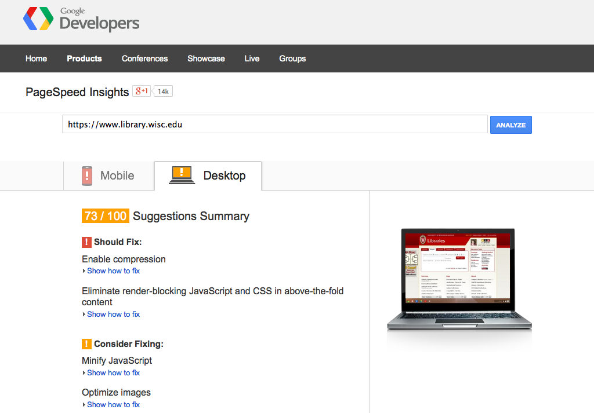

Uglifying in Public
Website design for speed, accessibility,
and staff delight
Cody Hanson and Eric Larson Web Development University of Minnesota Libraries
Responsive
Web
Design
Support All Devices

Fluid Grid

Mobile First
Mobile First
- Emphasize consistency in your design
- Prioritize your content
- Work with real HTML/CSS/JS wireframes
- Expect increased development time
Speed
whichloadsfaster.com
Opinionated design
(informed opinion)

"If your UX asks the user to make choices... even if those choices are both clear and useful, the act of deciding is a cognitive drain.
And not just while they're deciding... even after we choose, an unconscious cognitive background thread is slowly consuming/leaking resources, ‘Was that the right choice?’"
- Kathy Sierra, "Your App Makes Me Fat"
Dev
Priorities
Public Process
- (Very) Early prototype
- Rapid design iterations
- Public URL to BETA site
- Multiple feedback loops
Modern Web Standards
Functional Prototypes
Performance-Minded Redesign
Feedback
Usability testing
Babies
Build Process
PageSpeed Insights
Recommendations
- Reduce server response time
- Prioritize visible content
- Optimize images
- Minify HTML, CSS, JavaScript
- Leverage browser caching
- Enable compression
- Avoid landing page redirects
- Eliminate render-blocking JavaScript and CSS in above-the-fold content
Build Process
^^ Code to MAKE your website awesome.
Build TODOs
- Smaller HTML / CSS / JS files
- Fewer HTTP requests
- Optimized images
- Cache-friendly, fingerprinted assets
Optimize images
Optimize images
Typical CSS & Javascript
Concatenated CSS & Javascript
Leverage browser caching
Regular
Leverage browser caching
Fingerprinted
Typical HTML
Minified HTML
Speed Leaderboard
Tools &
Resources
Google PageSpeed
https://developers.google.com/speed/pagespeed/insights
Google PageSpeed · UMN
Google PageSpeed · UW-Madison
GTmetrix
http://gtmetrix.com/reports/www.lib.umn.edu/5jEMp3uN
WEBPAGETEST
http://www.webpagetest.org/result/140318_HP_SVY/
Middleman
Bootstrap
LESS
Bower
Kraken.io
Online image optimization
Uglifying in Public
Website design for speed, accessibility,
and staff delight
Cody Hanson and Eric Larson Web Development University of Minnesota Libraries